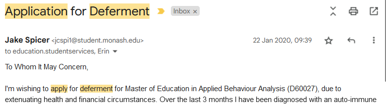
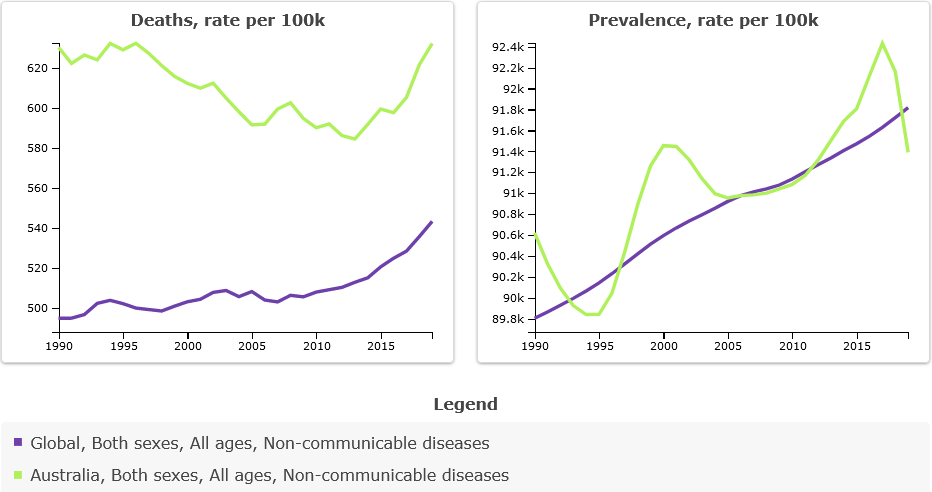
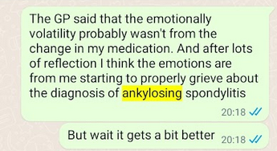
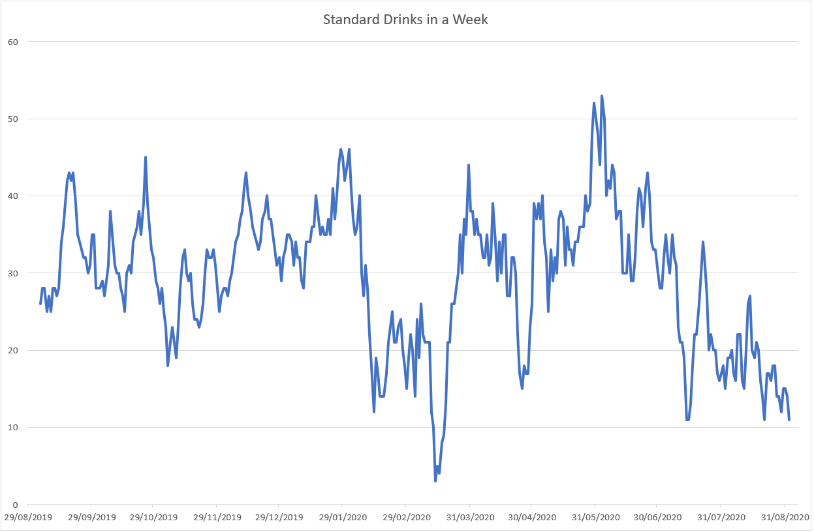
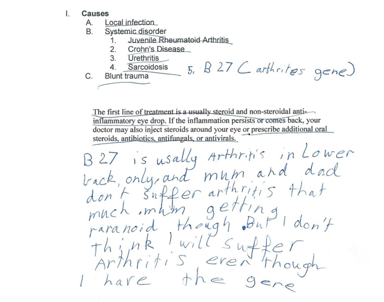
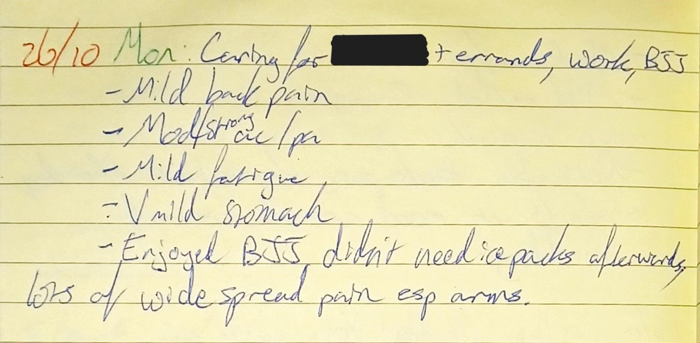
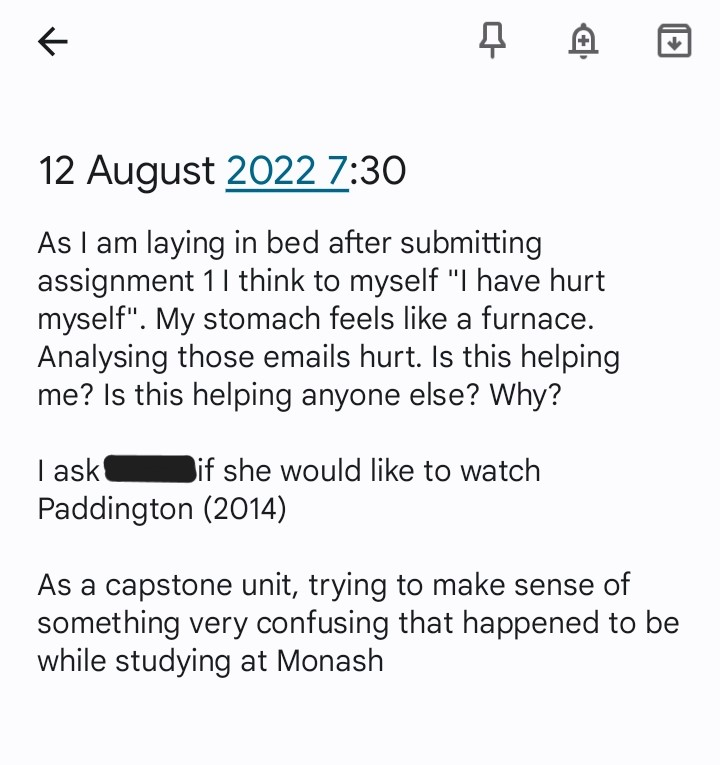
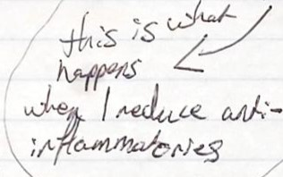
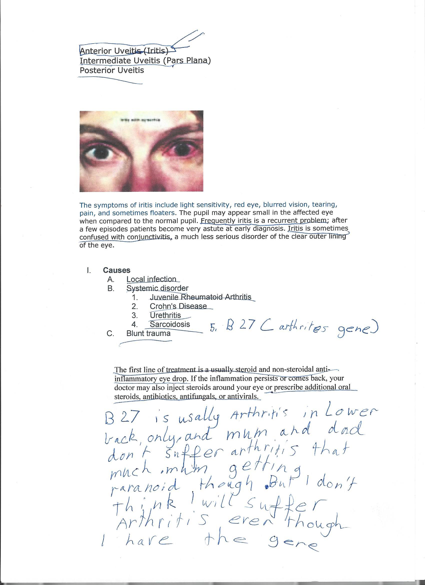

Abstract
The purpose of this study is to explore the potential for novel insights into the effective self-management of chronic disease with autoethnography and thematic analysis informed by behaviour analysis. The study will draw upon literature on theories and models of chronic disease self-management, barriers and facilitators to self-management, and the role of narrative in Chronic Disease Self-Management. The findings of this study have the potential to inform the development of more effective interventions for chronic disease self-management and provide direction for future qualitative research exploring lived experience.
Abbreviations
ABA – Applied Behaviour Analysis
AS – Ankylosing Spondylitis
RA – Rheumatoid Arthritis
CM – Contingency Management
CDSM – Chronic Disease Self-Management
PF – Psychological Flexibility
ACT – Acceptance and Commitment Therapy
WHO – World Health Organisation
NCD – Noncommunicable Disease
NSAID – Non-Steroidal Anti-Inflammatory Drug
PKG – Personal Knowledge Graph
Acknowledgements
I would like to express my heartfelt thanks to the following individuals and organisations for their support and assistance in the completion of this research project:
- The Monash University Faculty of Education, in particular Dr Fleur Diamond, Dr Scott Bulfin, and Dr Megan Adams, for their guidance and mentorship throughout this process.
- Dr Lynette Pretorius for her valuable insights into writing and autoethnography.
- Lauren Cowled for being an invaluable writing buddy and providing much-needed support and encouragement.
- Dr Russ Fox for refusing to send any more RFT articles until I submit this report.
- Dr Erin Leif for her tireless efforts and heartfelt contributions to the field of behaviour analysis in Australia.
- Grace my inspiration and motivation.
I am deeply grateful to all these individuals and organisations for their support and guidance. Without their help, this research project would not have been possible.
Declaration
This project contains no material that has been accepted for the award of any other degree or diploma in any educational institution, and, to the best of my knowledge and belief, it contains no material previously published or written by another person except where due reference is made in the text of the project.
Signed: Jake Spicer
Date:7/1/2023
The research for this project did not require the approval of the Monash University Human Research Ethics Committee (MUHREC).
Introduction
Narrative disrupted
In an email to my course coordinator on the 30th of October 2019, I stated, "I'm emailing you to request a 1-week extension on the Assignment 2 deadline. The reasoning is due to mental and physical health challenges concerning burn-out and exhaustion." My body was in the process of changing. Three months later, on the 22nd of January 2020, I sent another email with the subject line 'Application for Deferment'.

It took me a year and a half to send the following email titled 'Re-enrollment… I'm back!'. I included the following sentence summarising what had happened during that time: "I took the intermission as I was diagnosed with an arthritic inflammatory disease (with the catchy name Ankylosing Spondylitis). I would love to say that after a year off I have all the symptoms under control and am raring to go, but unfortunately that isn't the case. I am still battling regular inflammatory flares which cause pain and 'brain fog'. However I am genuinely looking forward to coming back to part time study." The germination for my current research project is already evident in this email, where I say, "For now my intentions are pointing towards me using the science of behaviour change in other areas." Reading this email today, it is clear that I have already started to become a different person.
Chronic disease, a global concern
Chronic diseases, such as diabetes, heart disease, and arthritis, are a public health concern nationally and internationally (World Health Organisation, 2022). These conditions often require self-management to effectively manage symptoms and prevent further health complications. However, chronic disease self-management can be complex and challenging, involving various physical, psychological, and social factors. This study aims to explore the application of a synthesis of autoethnography and behaviour analysis in researching chronic disease self-management to increase our understanding of this complex and urgently important topic. This study's educational and theoretical significance lies in its potential to contribute to developing more effective self-management interventions and inform the personal and professional implementation of self-management for people suffering from chronic disease.
Chronic disease has become a significant public health issue globally, with the World Health Organisation (WHO) reporting in their noncommunicable disease (NCD) progress monitor that premature NCD mortality has increased in 20 countries worldwide since 2020 (WHO, 2021). Chronic diseases are responsible for the most deaths worldwide, accounting for over 70% (WHO, 2020). In Australia, data from the Australian Bureau of Statistics (2020-21) indicates that 78.6% of Australians live with at least one chronic health condition. The significant burden of chronic disease on individuals and society highlights the importance of effective self-management interventions and strategies. However, self-management can be complex and challenging, with research suggesting that individuals from lower socio-economic groups may struggle with self-management (Zabeen et al., 2021). It is, therefore, essential to identify and understand the various factors that influence an individual's ability to manage their chronic health condition effectively and to develop and implement effective interventions and strategies to support self-management efforts.
Figure 2

: Mortality from chronic disease and prevalence of chronic disease in Australia and globally between 1990-2020Note: Global Burden of Disease Study 2019 (GBD 2019) Results. Seattle, United States: Institute for Health Metrics and Evaluation (IHME), 2020. Available from https://vizhub.healthdata.org/gbd-results/.
According to a study conducted in New South Wales, Australia, 5% of COVID-19 patients experience symptoms for up to 3 months after infection (Liu et al., 2021). This finding highlights the potential for an increase in chronic disease symptoms after contracting COVID-19 and the importance of effective self-management strategies for individuals with chronic conditions. The ongoing COVID-19 pandemic may also contribute to the prevalence of chronic health conditions, highlighting the need for further research on the long-term impacts of the virus on individuals' health and well-being. One recent study by Ismail et al. (2022) found that more than half of respondents to a web-based survey reported their chronic disease symptoms worsening during the pandemic. In particular, understanding the challenges and needs of individuals living with long-term COVID-19 symptoms may be crucial in developing effective self-management interventions and strategies. The proposed research aims to contribute to this understanding by synthesising autoethnography and behaviour analysis to examine chronic disease self-management.
Self-management and CDSM
The definition of self-management varies across different contexts (Ferreira da Costa & Kienen, 2021). The most common definition of self-management in Australian healthcare is from the Chronic Condition Self-Management Guidelines (Australian Health Ministers' Advisory Council, 2017). It quotes a definition put forth by Gruman and Von Korff (1996) describing a process that "involves (the person with the chronic disease) engaging in activities that protect and promote health, monitoring and managing of symptoms and signs of illness, managing the impacts of illness on functioning, emotions and interpersonal relationships and adhering to treatment regimes." (p. 1). This definition emphasises the multifaceted nature of self-management, involving physical symptoms and treatment and the psychological and social impacts of living with a chronic disease. It also highlights the active role of individuals with chronic diseases in managing their health and well-being. Chronic Disease Self-Management (CDSM) emerged with the patient-centred care movement, which aims to treat "patients as individuals and as equal partners in the business of healing" (Coulter & Oldham, 2016, p. 114). However, some authors have criticised patient-centred care, arguing that it "can be seen differently from the way they are depicted in contemporary discourses about health care" (Siouta & Olsson, 2020, p. 1).
Other authors have suggested that self-management can reinforce a particular conception of what it means to be a self-managing patient (Lawn et al., 2011) and that while it may be empowering for some, "it might be more problematic for those who do not wish to or cannot exercise the same degree of control over their care" (p. e5). For example, the Chronic Condition Self-Management Guidelines suggest that a person-centred approach can "enhance self-efficacy, (and) encourages greater personal responsibility" (p. 13). However, as Greenhalgh (2009) notes, "responsibility for preventing and managing illness lies at many levels", such as the individual, health professional, and broader society level (p. 631). Further, the author states that "being both poor and ill can bring shame and insecurity that can generate a vicious circle of insecurity, depression, and social isolation" (p. 631). Because of these issues, the implication of the 'responsible' self-managing patient can result in problematic implementations of self-management health interventions.
The researcher has a bone to pick
By September 2019, I had accurately self-diagnosed myself with Ankylosing Spondylitis (AS), an arthritic inflammatory disease that I and my general practitioner and rheumatologist subsequently confirmed through blood tests and an X-Ray. A diagnosis of AS can often take a long time, with some studies finding the average duration from symptom onset to diagnosis as high as eight years (Reed et al., 2008). However, I had good reason to suspect this diagnosis to be correct. When I was 12 years old, I first encountered anterior uveitis, an inflammation of the iris that eventually subsided with cortico-steroid eyedrops. My mum tells me an ophthalmologist described the severity of the pain from iritis as a “ten out of ten”. At 14, I was diagnosed with AS, but the symptoms gradually subsided as I continued through school despite my lack of ‘treatment adherence’ to the stretching regime my physio prescribed.
Ankylosing Spondylitis, with its bewildering collection of syllables, derives from the Greek word "ankylos", meaning bent or crooked. The root of "spondylitis" is the Greek word for vertebra or joint "spondylos", and the suffix "itis" indicates inflammation. Together it describes the features and progress of the disease: chronic inflammation of the spinal vertebra and joints leading to a crooked immobile posture from joint fusing to bone.
In November 2019, I had been on a Non-Steroidal-Anti-Inflammatory (NSAID) called Meloxicam for two months, successfully reducing many of the worst symptoms. My rheumatologist suggested trying a different type of NSAID to see if more symptom relief could occur. I thought it would be logical to first wean off Meloxicam before trying this new medication, but I was not aware of the impact coming off this medication could have. During this process, while at work, there was a minor change in my schedule and out of nowhere, I suddenly burst into uncontrollable tears. This was so out of character that my colleagues and manager suggested I go home and see my doctor.
When my regular doctor was unavailable, a different doctor informed me that my emotional volatility was not due to the medication change. Instead, to address the cause of these feelings, I needed to focus on changing lifestyle factors. He gave various suggestions such as moving out of my sharehouse, finding a girlfriend, marrying her, and adopting a new healthy hobby such as going to the gym. Even if we ignore the implicit hetero-normative assumptions beneath the suggestions that I settle down with a woman, I leave that appointment feeling significantly worse. In my fragile state, I interpreted the doctor as suggesting my distress was my fault; I needed to change who I was.
Figure 3: Critical incident message

It is not uncommon for individuals to have trouble trusting their healthcare providers, especially when they feel unheard or misunderstood. The healthcare system is complex and nuanced, and it can be common for there to be a disconnect between the patient's experiences and the understanding of their healthcare providers. In moments like these, it is essential to remember that trust is delicate and fragile and takes time and effort to build and maintain. It is also crucial to recognise that healthcare providers are human and may have their own biases and limitations, and it is up to the individual to advocate for their care and seek out providers who are a good fit for their needs and values. It is a process of negotiation and finding what works best for the individual, and it is okay to have moments of doubt or frustration along the way. However, through self-advocacy and open communication, individuals can find the care and support they need to manage their health and well-being. This experience and similar experiences shared with me have, in part, fuelled the motivation for this research project.
Research questions
This research project examines the experiences of CDSM by combining autoethnography, a reflexive and narrative-based research method, with behaviour analysis, a theoretical framework for understanding behaviour. In particular, the research addresses the following questions: (1) What is the lived experience of self-management of Ankylosing Spondylitis? (2) Can a synthesis of narrative research and behaviour analysis provide a deeper understanding of effective self-management interventions or strategies for individuals with chronic disease? Furthermore, (3) How does the role of narrative influence the successful implementation of chronic disease self-management (CDSM) strategies?
Literature Review
My introduction to self-management
My introduction to self-management was through behaviour analysis. The definition and description of self-management in ABA are slightly different than in healthcare. Cooper et al. (2019) describe self-management as the process through which an individual learns to regulate their behaviour to achieve some desired goal. As any young, curious scientist, I was interested in learning how to apply this science to change my behaviour. If you ask a behaviour analyst what the most crucial concept is in behaviour analysis, they will mention data or measurement. I explored various self-data collection techniques, such as tracking my daily activities in a journal, filling out mood and energy rating scales, and automatically graphing behaviours to track my progress. I found that having a concrete way to measure my behaviours was essential to understanding the impact of my behaviour on my life. This data-driven approach to understanding my behaviour has been instrumental in helping me learn how to self-manage my arthritis. By measuring my progress, I have been able to set goals for myself and adjust my behaviour accordingly. I have also been able to identify patterns in my behaviour that I can use to self-regulate and make more informed decisions. However, my inflammatory symptoms worsened, and my mental health declined. I noticed I was drinking significantly more alcohol than usual, so I started tracking the number of standard drinks I consumed. Between September 2019 and September 2020, I watched as slowly the trend started to decrease. See Figure 4.
Figure 4: Changes in the author's weekly average of standard drinks of alcohol between September 2019 - 2022

Note: A graph of the author's alcohol consumption per week between 2019 and 2020.
Theories and models of chronic disease self-management
There are several theories and models relevant to the self-management of chronic disease. Examples include the Health Belief Model, the Transtheoretical Model of Change, and Psychological Flexibility. These theories and models focus on various aspects of self-management, such as an individual's beliefs and attitudes about their condition, the steps they take to manage their condition, and the healthcare system's role in supporting self-management.
Health Belief Model
The Health Belief Model (HBM) is a psychological model that aims to explain and predict health behaviours (Champion & Skinner, 2008). The model posits that an individual's behaviour is determined by their beliefs about their health and the health consequences of a particular behaviour. For example, individuals who believe they are at risk of developing a specific health condition and that a particular behaviour (such as getting a flu vaccination) can prevent that condition may be more likely to engage in that behaviour. Empirical research has demonstrated the utility of the HBM in predicting health behaviours. A systematic review of the empirical research on predicting medication adherence found significant evidence to support its clinical use (Holmes et al., 2014). However, some authors have criticised the model for relying on rational decision-making and lacking attention to the social and cultural factors influencing people's health beliefs and behaviours (Sutton, 2010).
Transtheoretical Model of Change
The Transtheoretical Model of Change (TTM) is a psychological model that describes the behaviour change process. The model proposes that individuals go through distinct stages as they progress from being unaware of the need to change a behaviour to successfully adopting a new behaviour (Prochaska & Velicer, 1997). The stages of change in the TTM include pre-contemplation, contemplation, preparation, action, and maintenance. Empirical research has demonstrated the utility of the TTM in predicting behaviour change. For example, a study published in the American Journal of Health Behaviour (Crocker et al., 2001) found that the model effectively predicted smoking cessation among college students. Another study published in the Journal of Consulting and Clinical Psychology (Davies, 2002) found that the model helped predict weight loss among overweight and obese individuals. However, the model has also been criticised for its lack of consideration for the role of social and environmental factors in influencing behaviour change (Prochaska & Velicer, 1997).
Psychological Flexibility
Psychological Flexibility (PF), a fundamental construct within Acceptance and Commitment Therapy (ACT), is defined as the ability to be present in the moment, open to experience, and take action that is consistent with one's values (Hayes et al., 2012). Studies have shown that higher levels of PF are associated with improved quality of life and physical health outcomes (Gifford et al., 2014). PF as a theoretical model for Chronic Disease Self-Management (CDSM) is an emerging area of research, with some initial findings indicating its potential effectiveness. For instance, Yu et al. (2020) found that increased PF was related to changes in pain, fatigue, and daily functioning in individuals with chronic conditions. However, systematic reviews and meta-analyses have found that ACT and PF are still emergent fields requiring more high-quality randomised controlled trials before they can be considered well-established intervention for chronic disease (Graham et al., 2016; Dochat et al., 2021). Further research is needed to explore the potential role of PF in CDSM and to develop evidence-based interventions that incorporate PF principles.
Summary
Various theories and models are relevant to the self-management of chronic disease, including the Health Belief Model, the Transtheoretical Model of Change, and Psychological Flexibility. These theories and models offer valuable insights into the various factors influencing an individual's self-management behaviours, such as their beliefs, attitudes, or stages of change. While these models help predict health behaviours and behaviour change, they also have limitations and are not comprehensive in understanding chronic disease self-management's complex and multi-dimensional nature. Future research should continue to explore the utility and potential limitations of these theories and models and the role of other factors, such as social and environmental influences, in predicting and promoting successful chronic disease self-management behaviours.
Barriers and facilitators to self-management.
Chronic diseases can significantly impact an individual's emotional and psychological well-being, which can, in turn, impact their ability to manage their condition. For example, depression and anxiety are common in individuals with chronic diseases. These conditions can make it difficult for individuals to adhere to their treatment plan, cope with symptoms, and manage the physical and emotional challenges of living with a chronic condition.
Contingency Management
Behaviour analysts believe that health-related behaviours are influenced by antecedent stimuli (events that occur before the behaviour) and consequential stimuli (events that occur after the behaviour), as well as the reinforcement contingencies that shape the occurrence of the behaviour (Normand et al., 2015). Contingency management (CM) is a technique that involves altering the consequences of behaviour in order to increase or decrease the likelihood of its occurrence (Normand et al., 2015). CM has been extensively studied and has been shown to be an effective intervention for substance use disorders (Getty et al., 2022). However, in recent years, researchers have begun to explore the potential for applying CM interventions to other areas.
Self-tailored deposit-contract CM has been shown to be effective in increasing physical activity (Krebs & Nyein, 2021), decreasing smartphone usage (Williams-Buttari et al., 2022), and smoking cessation (Anderson et al., 2021). For a group of college students who reported negative side effects of smartphone use, a CM and deposit-contract intervention was evaluated (Williams-Buttari et al., 2022). These students decided on daily smartphone usage goals and deposited $40, which they would earn back if they met their phone usage goals. Four out of the six participants showed consistent decreases in phone usage, while two showed inconsistent effects.
However, other studies have found mixed effectiveness for self-funded deposit-contracts compared to typical financial incentives (Batchelder et al., 2022), with de Buisonjé et al. (2022) warning that they did not “replicate the finding that loss-framed financial incentives are more effective than gain-framed incentives” (p. 11). What’s clear is more research needs to be done investigating these factors. What factors influence the uptake of deposit-contract interventions? And further, what is the lived experience?
Narrative and CDSM
The relationship between narrative and chronic disease self-management has gained increasing attention over the last decade (Pedraz-Marcos et al., 2020). Studies have found that individuals with chronic conditions often engage in a renegotiation of the self as they navigate the challenges of living with a chronic illness (Donnelly et al., 2020). This process involves managing physical symptoms, treatment, and the psychological and social impacts of living with a chronic disease. The role of narrative in shaping an individual's understanding and experience of their illness, argues (Barnes-Holmes et al., 2018), is an essential aspect of this process. Additionally, a sociological framing of “coping with illness rather than managing it” (p. 630) is essential for understanding chronic disease self-management (Greenhalgh, 2009). This section will examine the role of narrative in CDSM and the various ways it can influence self-management.
Identity and story
One key aspect of narrative and CDSM is the role of the stories people create around their experiences of living with a chronic disease. Narratives, such as life and illness narratives, play a significant role in shaping an individual's sense of self and identity. Life narratives are the stories that individuals talk about, including their experiences, values, and beliefs. Illness narratives, on the other hand, refer to the stories that individuals talk about their experiences with illness, including the impact of illness on their lives and the ways in which they cope with and manage their illness.
One study found that individuals with chronic illness often experience changes in their sense of self due to the illness and the associated physical, emotional, and social challenges (Moss-Morris et al., 2002). These changes in self-concept can have a significant impact on an individual's ability to manage their chronic disease, as well as their overall quality of life. Another study found that individuals with chronic illness often adopt a narrative approach to understanding and coping with their illness, using illness narratives to make sense of their experiences and integrate them into their sense of self (Bury, 2001). These narratives can provide a sense of coherence and meaning and can be important in chronic disease self-management.
Disrupted and destabilised narratives
As described by Bury (1982), disrupted narratives present illness as a disruption to an individual's life, with the potential for recovery, stability, deterioration, or death. On the other hand, destabilised narratives depict illness and disability as open-ended and multifaceted, requiring more from the reader and highlighting various perspectives and positionings (Richards, 2008; Frank, 2000). These narratives offer a subjective, individualised view and present a postmodern, politicised representation of illness and disability.
Illness narratives
Illness narratives are stories that individuals tell about their experiences of illness and how they make sense of them (Bury, 2001). They can also include the social, cultural, and personal aspects of the experience (Kleinman, 1997). Illness narratives significantly affect how individuals cope with and manage their chronic disease and how others perceive and treat them (Richards, 2008). Several distinct types of illness narratives have been described in the literature. One type is "illness as tragedy", in which the individual portrays their illness as a devastating event that has significantly impacted their life and well-being (Frank, 2000). Another type is the "illness as hero" narrative, in which the individual portrays their illness as a challenge they have overcome or are in the process of overcoming (Frank, 2000). Finally, a third is the "illness as disease" narrative, in which the individual portrays their illness as a medical condition that can be managed or cured through treatment and medication (Frank, 1995).
One final narrative important for the purpose of this study is the concept of "illness as teacher", an illness narrative that portrays the experience of illness as a transformative and positive experience in which the individual learns valuable lessons and grows as a person. Studies have shown that some individuals living with chronic disease have adopted an "illness as teacher" narrative to cope with the challenges and impacts of their condition (Maté, 2022; Stamm et al., 2004; Satink et al., 2004). Narrative techniques such as journaling, storytelling, and art therapy can aid in exploring and expressing thoughts and feelings about chronic illness, leading to a greater understanding of self and facilitating the development of adaptive coping strategies. In addition, utilising narratives in chronic disease self-management can provide insight into the complex intersections of the self and health.
It is important to note that these are just a few examples of the many different illness narratives that individuals may adopt simultaneously or in different contexts (Frank, 1995). Illness narratives can also be fluid and may change over time as individuals' experiences and perspectives change. In conclusion, illness narratives play a significant role in how individuals with chronic disease make sense of and cope with their condition. They can take many forms, may change over time, and can be influenced by many biological, psychological and cultural factors.
Methods
The researcher has no clothes; autoethnography as method
Autoethnography is a qualitative research method that incorporates a range of traditions, including autobiography, ethnography, and narrative studies (Cooper & Lilyea, 2022). As a research method, it combines the subjective experiences of the researcher (auto) with a descriptive analysis (graphy) of how those experiences connect to broader cultural phenomena (ethno) (Adams et al., 2017). Through autoethnography, researchers can reflexively acknowledge their own experiences within a field of study, situating them within social, political, and personal history (O’Hara, 2018). Autoethnography is a valuable method for examining the lived experiences of individuals and can provide rich and detailed accounts of how individuals experience and make sense of their own lives. By combining autoethnography with behaviour analysis, it is possible to examine the ways in which individuals' behaviours and experiences are shaped by cultural and social factors and explore the contingencies that influence chronic disease self-management behaviours.
The use of a reflexive and narrative-based approach, such as autoethnography, is particularly well-suited for exploring the role of narrative in the implementation of chronic disease self-management strategies. Narrative is an important aspect of how individuals make sense of their experiences and how they communicate those experiences to others. By using a method specifically designed to capture and analyse narrative accounts, it is possible to gain a more in-depth understanding of the role narrative plays in successfully implementing self-management strategies.
Autoethnographic research studies the subjective experiences of the researcher and connects them to broader cultural and societal phenomena. Susan O'Hara (2018) outlines six steps for conducting autoethnographic research: (1) selecting a writing style, (2) considering project ethics, (3) identifying and describing the theoretical or conceptual underpinning of the project, (4) conducting data collection, (5) analysing and comparing data with individual experiences from the literature, and (6) writing the report. The following section will describe how the project unfolded across these dimensions.
Writing style
Autoethnography has traditionally been separated into two camps: evocative writing and analytical writing. Chang (2016) explains that evocative autoethnographies emphasise the storytelling aspect of the research, while analytic autoethnographies focus more on the cultural and descriptive aspects of the research. Chang suggests that the ultimate goal of autoethnography is a synthesis of evocative storytelling about the self, situated within an analysis of the researcher's place within a culture (p. 444). Hamilton & Pinnegar (2015) argue that autoethnography is well-suited for exploring the tensions between an individual's subjective experiences and the broader cultural context (p. 18).
Theoretical framework
Behaviour analysis is a scientific approach to understanding and influencing behaviour. Within behaviourism, two main approaches are methodological behaviourism and radical behaviourism (Moore, 2022). Methodological behaviourism, developed by John B. Watson in 1913, focuses on studying observable and measurable behaviour and the effects of reinforcement and punishment on behaviour. Radical behaviourism defined itself in opposition to methodological behaviourism, emphasising the importance of understanding the entire organism and its environment rather than just observable behaviour. This methodological difference allows radical behaviourists to include 'private events', such as thinking, feeling, or physiological responses. Radical behaviourism also applies behavioural analysis to real-world problems, such as developing interventions to improve health behaviours.
While both methodological and radical behaviourism are concerned with studying behaviour and its environmental determinants, the radical behaviourist approach has proved particularly useful in developing interventions to promote health and self-management behaviours (Normand et al., 2015). In this research project, autoethnography and behaviour analysis were used to investigate whether this approach may allow for a deeper understanding of the subjective and contextual factors that influence chronic disease self-management.
Health-related Applied Behaviour Analysis
While much of the ABA literature has been focused on teaching individuals with developmental disabilities such as ASD (Roane et al., 2016), behaviour analysis has significantly influenced health and healthcare. Attention has focussed on interventions targeting physical activity (Stedman-falls & Dallery, 2020), diet (Normand & Osborne, 2010), and medication adherence (Petry et al., 2012). Behaviour analysts have used various techniques to investigate these behaviours, including using reinforcement and punishment to increase or decrease the likelihood of certain behaviours occurring and manipulating environmental factors to promote behaviour change.
By using a behaviour analytic approach, researchers, patients, and practitioners can better understand the factors that influence health behaviours and develop more effective interventions to promote behaviour change.
Data collection
In this study, data collection for the autoethnographic component of the research involved collecting personal documents and artefacts related to self-management, health, and chronic disease. These artefacts were collected by searching through old notebooks and social media posts, as well as searching through emails for specific keywords. The researcher also consulted with family members to identify potential data artefacts that may be relevant to the study. This process allowed for a rich and varied dataset to be generated, providing a detailed and nuanced understanding of the experiences and perspectives of the researcher as an individual living with a chronic disease.
Personal documents related to self-management, health, chronic disease, emails, and subjective emotional experiences related to these topics were collected. Two examples of data are below in Figures 5 and 6. The first is a school project I completed in 2003, the topic of which was 'Disease and Disability'. One page discusses the causes of iritis, an inflammation of the iris from which I had just recovered. In handwritten pen, I wrote, "Mum and Dad don't suffer arthritis that much. Mum getting paranoid though. But I don't think I will suffer arthritis even though I have the gene", referring to my positive blood result for the HLA B27 gene, associated with Ankylosing Spondylitis and other arthritic conditions.
Figure 5: School Disability Assignment Extract

Another example is a flare diary written between the 28th of September 2020 and the 26th of October 2020. During this time, I attempted to reduce my primary medication Meloxicam, a Non-Steroidal Anti-Inflammatory (NSAID). In addition, I tracked the duration of the inflammatory flare, possible triggers, pain and fatigue levels, and other relevant variables or contexts.

Figure 6: Flare Diary ExtractNote: An extract of a flare diary from the 26th of October. It details the activities I completed that day as well as my subjective pain, aches and pains, and fatigue.
The data was organised using a Zettelkasten system using a note-taking application called Roam Research. A Zettelkasten is a note-taking system that allows users to organise their ideas and research in a non-linear fashion (Konrad, 2018). It was developed by German philosopher and sociologist Niklas Luhmann and consisted of a network of interconnected notes that can be linked and reorganised as needed (Luhmann, 1995). In conjunction, I also used a reference manager software called Zotero and note-taking software Roam Research. In their 2022 article, Pyne & Stewart (2022) describe the concept of a Personal Knowledge Graph (PKG). Through bidirectional links between nodes (think a page of text), complex webs of interconnected themes can be easily visualised.
Using a Zettelkasten note-taking system for this research project has several potential benefits. Firstly, the non-linear structure of a Zettelkasten allows for the organisation of data in a manner that reflects the complex and multifaceted nature of the research topic. This can facilitate the identification of patterns and relationships within the data, as well as the development of a nuanced understanding of the research topic. Secondly, the Zettelkasten system promotes a more active and reflective approach to data analysis by requiring researchers to create separate notes for each idea. This can facilitate the development of more in-depth and comprehensive insights, as well as the identification of nuances and complexities within the data. Overall, the use of a Zettelkasten can enhance the rigour and depth of the research process and facilitate the development of more meaningful and insightful findings.
To establish and support the authenticity and trustworthiness of the data, Chang (2016) argues that the autoethnographer should use multiple data sources outside of memory. These artefacts served to triangulate and validate other data, such as self-recall and memory. The data for this study involved the collection of personal documents, cultural artefacts and the writing and analysing of the researcher's own experiences. It is important to note that multiple data sources were used where possible to establish the authenticity and trustworthiness of the data. Overall, the data collection process for this study followed best practices for autoethnography within the constraints of the project.
Data analysis
The thematic analysis (TA) approach, also known as reflexive thematic analysis, is a qualitative analysis method that aims to identify patterns or themes within a dataset (Braun & Clarke, 2019). According to Braun and Clarke, a theme reflects a shared pattern of meaning (p. 843). TA encompasses various approaches to qualitative research that involve identifying themes within a dataset. One of the main benefits of this method is its flexibility (Braun & Clarke, 2019, p. 3), as it can be used as an analytic method "independent of theory and epistemology" (p. 3). TA has several uses where it excels, such as describing the lived experiences of particular social groups or examining aspects of social processes, as well as it’s suitability to beginner researchers due to the method providing clear sequential steps (Terry et al., 2017, p. 34).
In this study, the lived experience of chronic disease was investigated through the lens of self-management and factors that may act as barriers to self-management. Using a combination of behaviour-analytic language and non-behaviour-analytic terms, such as "stress" and "shame," is a novel approach within the literature on self-management and is well-suited for reflexive thematic analysis and autoethnography.
The process of thematic analysis consists of six phases, according to Terry et al. (2017). These include familiarisation with the data, coding the data, and exploring and manipulating coded themes. During the initial stages of familiarisation and coding, the researcher actively engages with the data and notes any relevant themes informed by the theoretical or conceptual framework. Coding should be open and relevant to the research questions to identify and analyse key themes in the data. In the theme development phase, the themes developed in the coding phase are combined into more meaningful patterns, allowing the researcher to identify the key themes and patterns in the data and begin analysing their significance concerning the research question.
The theme review phase involves considering the developed themes as "candidate themes" and determining whether they tell a meaningful story that answers the research question. After the review phase, the themes must be defined and named, with short summaries that capture the essence of the theme. The final report should include a summary of the research process, the key themes and patterns identified, and the implications of the findings for the research question and broader literature.
Why autoethnography?
Autoethnography, while sharing many characteristics with other narrative research methods, such as narrative studies or self-study (Chang, 2016), autoethnography distinguishes itself in several ways. First, autoethnographers are the research subjects and authors of their texts. Second, autoethnography is a form of research that uses the self as data. Third, autoethnography is a reflexive form of writing that requires researchers to position themselves. Hamilton & Pinnegar (2015) describe autoethnography as having a "fundamental purpose of disrupting society and culture" that results in a "claim to know" (p. 20). The authors argue that the primary concern of autoethnography is epistemological, based on the researcher's claim to know from the perspective of lived experience. The following section will explore some of the main differences between autoethnography and other narrative research methods, the purpose of autoethnography in the context of this research project, and the importance of reflexivity in autoethnography.
Reflexivity is an essential aspect of autoethnography because it requires researchers to position themselves within their work (Berger, 2013). The researcher must reflect on their own experiences, assumptions, and biases and consider how these may influence the research and the resulting conclusions. By incorporating reflexivity into their work, Koopman et al.(2020) argue autoethnographers can create a more nuanced and complex understanding of the research topic and avoid making assumptions or overgeneralising based on their own experiences. Reflexivity also helps make the research more transparent and accountable, allowing readers to better understand the researcher's perspective and the study's limitations.
Criticisms of autoethnography
Lynette Pretorius (2023), in a soon-to-be-published book chapter on collaborative autoethnography, discusses the critiques that autoethnography faces as a qualitative method. She quotes Ellis et al. (2011) that the most common critique is that it is either "too artful and not scientific, or too scientific and not sufficiently artful" (p. 283). Pretorius argues that autoethnographers "try to avoid this binary" (Pretorious, 2023, p. 6) and that those partaking in this method believe that "research can be rigorous, theoretical, and analytical and emotional, therapeutic, and inclusive of personal and social phenomena" (Ellis et al., 2011, p. 283). As I aim to synthesise two epistemologically opposed conceptions of experience, autoethnography is perfectly suited for exploring the objective and subjective experience of CDSM.
Ethical considerations
Privacy and confidentiality
Confidentiality is a crucial ethical consideration in any research, including autoethnographic research. In this study, measures were taken to protect the confidentiality of all personal information, such as storing all project data in a secure location through the Monash University Google Drive software. Furthermore, access was restricted to only those directly involved in the study. Any identifying information, such as other people's names, was removed from the data prior to analysis. In addition, I took steps to ensure that this research project did not affect my personal or professional relationships.
Vulnerability
Autoethnographic research involves self-disclosure, which can be transformative but carries unique ethical considerations (Richards, 2008). These include the potential for re-traumatisation or negative emotional experiences for the researcher and the potential for harm to others mentioned in the research or personal narrative. It is, therefore, essential to carefully consider the consequences personally and socially of disclosing sensitive or personal information. The researcher should take steps to minimise potential harm to self or others by seeking support and guidance while protecting the confidentiality of the research process.
Trustworthiness
Ensuring the trustworthiness of data is an essential aspect of conducting autoethnographic research. There are several strategies that researchers can use to enhance the trustworthiness of their data, including using multiple data sources, seeking feedback from peers and participants, and using reflexive practices. Unfortunately, Autoethnography inherently relies heavily on data generated from memory. Cooper & Lilyea (2022) acknowledge the reliability issues that stem from this; however, the authors encourage readers to approach memory "as an indication of what holds meaning for us about the topic we are exploring" (p. 200).
One way to enhance the trustworthiness of autoethnographic research is by using multiple data sources and seeking feedback from peers and participants. For example, Chang (2016) recommends using personal documents, observations, and interviews with others to provide a more comprehensive portrayal of experiences. By triangulating data from multiple sources, researchers can increase the validity of their findings and ensure that their interpretation of the data is reliable. In addition, sharing early drafts of the research with peers and receiving feedback can help researchers identify and address any potential biases or interpretations present in the data, and seeking feedback from those mentioned or discussed in the narrative can ensure that their portrayal of experiences is accurate and respectful.
Results
Introduction
The results of this project are an intimate and personal reflection on the complexities of living with a chronic disease and the narrative juggling of self-management. As I delved deeper into the past and the present, I was confronted with doubt, frustration, and pain.
However, through writing and reflecting, I found new ways of understanding myself. These themes did not emerge so much as they were co-created with the now-and-then.
After submitting the first draft of this literature review for assessment in August 2022, I lay in bed wondering if this research project was worth it. Completing that assignment was emotionally and physically exhausting. Ankylosing Spondylitis, even more than other arthritic conditions, is particularly sensitive to inactivity. The late nights spent reading and writing hunched at my desk had left my body aching. The caffeine I had used to fuel the final drafts left my stomach throbbing.
Figure 7: An emotional fieldnote

Note: A name has been redacted to protect privacy.
The emotional toll of revisiting difficult memories left me asking if I was helping anyone with this task, including myself. Despite these doubts, I continued. I couldn’t help wondering whether it was even feasible for me to change topics or methods at this stage in the project. Through this pain and difficulty, I yearned for self-understanding and for my self-understanding to help others.
Thus, I present to you the results of my journey, a raw and honest exploration of the complexities of living with a chronic illness and striving for self-management.
The following section presents the findings from the thematic analysis of this behaviourist autoethnography organised into three main categories: barriers and facilitators to self-management, interventions for self-management, and narrative and reflexivity. Each category is discussed in terms of its relationship to behaviour analytic terminology and how it contributes to understanding effective self-management strategies for individuals living with chronic disease.
One of the main findings of this research was the importance of particular facilitators in the effective self-management of chronic disease. These facilitators included curiosity and mindfulness, which can be critical factors in helping individuals stay engaged and motivated in their self-management efforts. This finding aligns with behaviour analytic principles, as curiosity and mindfulness are thought to increase the likelihood of behaviours related to exploration and learning, which can be important for individuals seeking to manage their chronic disease. Another important finding was the role of reflexivity in effective self-management. Reflexivity was a necessary component of self-management; specifically, self-compassion was identified as a critical factor in this process. This finding aligns with Gabor Maté's compassionate inquiry concept, which emphasises self-compassion's importance in understanding and managing one's own experiences.
Finally, the study identified influencing factors for interventions that may be effective in helping individuals to self-manage their chronic disease. A self-management intervention was conducted that explored the use of a deposit-contract contingency management system. It proved marginally effective at increasing treatment adherence by magnifying the value of non-adherence through a financial loss of $40. However, it was also noted if stress is contributing to self-management difficulties, then increasing the aversive consequence may have opposing side effects. This highlights the importance of considering the particular context in which interventions are implemented. Overall, these findings may contribute to understanding effective self-management interventions for chronic disease and highlights the importance of considering behaviour analytic principles in practice.
Facilitators to effective self-management of chronic disease
Curiosity and mindfulness
On the 22nd of October 2022, I ran out of the regular dose of my primary medication Meloxicam. So instead of going to the pharmacy to refill my medication, I started taking a slightly weaker dose of the same medication I had. Three days later, I noticed some sharp pain in my back and realised I had been feeling particularly fatigued all day. I had also been in a particularly low and irritable mood. I cast my mind back to consider what the trigger could be, and with rising anxiety, I remembered the medication reduction. I then considered the future: "My work will suffer. My study will stuffer. My relationships will suffer", followed quickly by "this is what happens when I reduce anti-inflammatories".
Figure 8: Fieldnote Extract 1
Note: The full-page data is found in the appendix.
Figure 9: Fieldnote Extract 1

On the spot, I decided I needed to go to a pharmacy as soon as possible. However, after 15 minutes of reflection, I had a simple, pure thought "what if my work does not suffer? What if my study is not impacted? What if the people around me understand?” With the slightest sliver of cognitive distance, I realised that "this is what happens when I reduce anti-inflammatories" is a familiar thought spoken with perhaps too much certainty. I quickly sketched these thoughts on paper, allowing me the distance to see these thoughts as the clear self-barrier towards the goal of coming off daily NSAIDs. This small moment of reflective curiosity has proven to be a potent tool.
Reflexivity
The results of this study found that reflexive practices, such as using curiosity and mindfulness as self-management strategies, can be effective in promoting self-awareness and facilitating behaviour change in the context of chronic disease. The use of an autoethnographic approach and reflexive thematic analysis helped the autoethnographer identify and reflect on a moment of increased pain and related emotions and explore the potential antecedents and consequences of this experience. Through this process, the participant was able to gain insight into the role of the decrease in medication as a trigger for aversive consequences, such as increased physical and psychological pain, and the potential impact on work, study, and relationships.
Interventions
One key aspect of self-management for chronic disease is the use of effective interventions to support behaviour change and disease management. This study identified two interventions as particularly relevant to the participants' self-management efforts: contingency management and narrative reflexivity. Contingency management involves using rewards or consequences to shape and reinforce targeted behaviours, while reflexivity refers to examining and reflecting on one's thoughts, feelings, and actions. Both interventions can be informed by behaviour analytic principles and can be powerful tools for individuals in their self-management journey.
Contingency management
One intervention explored in this study was the use of self-tailored deposit-contract contingency management (CM). This intervention involves establishing a behaviour contract with a third party and depositing a monetary amount that is returned if the specified goal is met and lost if the goal is not met. During the study, the researchers collaborated with a physiotherapist to create a goal of completing a certain number of exercises per week and tied it to a monetary deposit-contract CM procedure. The results of the study showed that while using the deposit-contract CM procedure did lead to a marginal increase in treatment compliance, it also significantly increased subjective stress. These findings suggest that contingency management interventions may not be the most effective in situations where stress is a barrier to self-management.
It is important to note that this was just one individual's experience with the deposit-contract contingency management intervention, and further research is needed to determine the generalizability of these findings. However, these results highlight the importance of considering the potential adverse effects of contingency management interventions, particularly in the context of self-management for chronic disease, and the need for personalised approaches that consider individual factors and preferences.
Summary
The results of this research project exploring the self-management of chronic disease suggest that certain facilitators, such as curiosity and mindfulness, are critical to effective self-management. The study also identified barriers to self-management, including the role of stress in hindering treatment adherence. The use of a deposit-contract contingency management system was found to be marginally effective at increasing treatment adherence but also increased subjective stress. These findings highlight the importance of considering the context in which interventions are implemented and suggest that interventions may need to be tailored to the individual's specific needs and experiences.
Discussion
The relationship between stress, self-management, and contingency management
Stress is a well-known barrier to effective self-management of chronic conditions, as it can interfere with an individual's ability to engage in self-management behaviours such as medication adherence, diet and exercise, and symptom management. In addition, stress can disrupt the functioning of the body's physiological systems, exacerbating chronic conditions and leading to adverse outcomes such as decreased quality of life and increased healthcare utilisation.
Contingency management interventions, which rely on rewards or incentives to promote behaviour change, are effective in various contexts, including substance abuse treatment and chronic disease management (Dallery et al., 2021; Dallery & Raiff, 2011; Petry, 2000). However, research has also shown that stress can interfere with the effectiveness of contingency management interventions. For example, a study of contingency management interventions for substance abuse treatment found that individuals who reported high-stress levels were less likely to achieve abstinence than those who reported low-stress levels (Higgins, 1999)
The finding that the use of the deposit-contract contingency management intervention led to a marginal increase in treatment compliance but also significantly increased subjective stress highlights the complex relationship between stress and the effectiveness of contingency management interventions. While contingency management procedures are an effective intervention for various behaviours related to chronic disease self-management, they may not be suitable for all individuals or situations.
These findings suggest that it may be necessary for healthcare practitioners to consider the impact of stress on the effectiveness of contingency management interventions and to address stress as a potential barrier to self-management. Strategies to reduce stress, such as relaxation techniques, mindfulness, and stress management education, may help promote effective self-management and improve the success of contingency management interventions. Additionally, it may be helpful to consider the context in which contingency management interventions are implemented, as stress levels may vary depending on the specific challenges and demands each person faces. Further research is needed to better understand the relationship between stress, self-management, and contingency management interventions and to identify effective strategies for addressing the negative impact of stress on self-management and the effectiveness of contingency management interventions.
Overall, it is vital to consider stress's role in self-management and its potential impact on the effectiveness of contingency management interventions. Strategies to reduce stress, such as relaxation techniques, mindfulness, and stress management education, may help promote effective self-management and improve the success of contingency management interventions. Additionally, it may be helpful to consider the particular context in which contingency management interventions are implemented, as stress levels may vary depending on the specific challenges and demands faced by everyone. Further research is needed to understand better the relationship between stress, self-management, and contingency management interventions and to identify effective strategies for addressing the negative impact of stress on self-management and the effectiveness of contingency management interventions.
Reflexivity, curiosity, and mindfulness
Limitations
As with any research study, there are several limitations to consider when interpreting the results of this study. One limitation was the time-limited nature of the study, which was conducted as part of two intensive teaching units on education research at Monash University. This time constraint resulted in several limitations, including avoiding engaging with vulnerable populations due to the risk of delays associated with ethics approval. As a result, the study was restricted to autoethnography and did not include life narrative data from others, interviews with people in the researcher's life, or collaborate autoethnography. Collaborative autoethnography can enhance the generalizability of autoethnographic research by incorporating multiple perspectives and voices on the research topic.
Another limitation was the need for the researcher, as a beginning researcher, to learn an extensive array of research skills quickly. This may have impacted the thoroughness of the analysis and interpretation of the data. Additionally, the time constraints of the study made it difficult to fully explore the opposing conceptual and epistemological assumptions underlying both behaviour analysis and narrative research, which have different goals and conflicting views on reality and knowledge construction. Future research could address these conflicts and explore the synthesis of these two approaches.
Another limitation is the lack of collaboration between the patient and healthcare professional in this study, as the research is exclusively from the patient's perspective. However, this methodological choice was partly due to the study's time and ethical constraints, and future research could examine the perspectives and experiences of both patients and healthcare professionals in the self-management of chronic disease.
The time constraints limited the amount breadth and depth of literature that could be reviewed on the various topics covered in the study, which may have impacted the comprehensiveness of the analysis and interpretation of the data. Additionally, there were likely more data artefacts that could have been included in the study, but time constraints prohibited their inclusion. Finally, the autoethnographer is said to generate understanding and knowledge by writing, rewriting, and analysing that writing. The time constraints of this study limited the amount of time that could be dedicated to profoundly exploring the researcher's writing.
Finally, it is essential to note that this study's findings are based on a single individual's experiences and may not be generalisable to other individuals living with chronic disease. Further research is needed to examine the experiences and self-management strategies of a more extensive and diverse sample of individuals.
Despite these limitations, this study provides valuable insights into the potential for autoethnography and behaviour analysis to inform the understanding of effective self-management strategies for individuals with chronic disease. Furthermore, by identifying facilitators of self-management, interventions that may be effective in supporting self-management efforts, and the role of reflexivity in self-management, this study contributes to the growing body of knowledge on this topic and has the potential to inform the development of more effective interventions for individuals in this journey.
Future research
Using Relational Frame Theory (RFT) and Acceptance and Commitment Therapy (ACT) as a theoretical framework could potentially enhance the complexity of human experience and language in this research if conducted on a larger scale, such as in a PhD program. This study used typical behaviour analytic terminology as an initial coding system to analyse the data. However, the results were not closely tied to these initial codes. This approach was chosen due to the time limitations in this small-scale research project, but other behaviourist philosophical frameworks may be more suitable for considering subjective lived experience.
Relational Frame Theory (RFT) is a theoretical framework that explains and predicts human verbal and cognitive behaviour (Hayes, Barnes-Holmes, & Roche, 2001). It was developed as an extension of traditional behavioural approaches to verbal behaviour, which had difficulty distinguishing symbolic thinking from operant learning (S. C. Hayes et al., 2020). RFT posits that derived relational responding, or the ability to relate stimuli based on their formal properties, is a learned operant (S. C. Hayes et al., 2020). RFT is a valuable framework for understanding complex human behaviour, such as language and thinking (J. O. Cooper et al., 2019). As such, it may be a practical, theoretical framework for informing a thematic analysis of research data.
The Psychological Flexibility (PF) processes, also known as the 'hexaflex', are a crucial component of RFT and refer to the ability to be present in the moment, open to experience, and take action that is consistent with one's values (Hayes et al., 2012). The hexaflex includes six processes: cognitive defusion, acceptance, contact with the present moment, self-as-context, values, and committed action (Hayes et al., 2012). In the context of a thematic analysis, the hexaflex may help generate complex and nuanced codes and themes due to its focus on the psychological processes underlying human behaviour.
Collaborative autoethnography
Collaborative autoethnography is a research approach involving multiple researchers' collaboration in creating an autoethnographic study. This approach has emerged in response to criticisms that traditional autoethnography can often be overly focused on the individual and lacks the rich, contextualised understanding of culture and society possible through collaboration with others (Pretorius, 2023).
Collaborative autoethnography allows researchers to bring diverse perspectives and experiences to the research process, resulting in a more nuanced and rich understanding of the studied phenomena (Chang et al., 2013). In addition, the collaborative nature of this approach can lead to a more reflexive and self-critical analysis, as multiple perspectives can challenge and critique the interpretations and assumptions of the individual researcher.
Future research exploring behaviourist autoethnographies may benefit from using collaborative autoethnography to address the limitations of individual perspectives and create a more comprehensive understanding of the phenomena being studied. Furthermore, collaborative autoethnography can provide the opportunity for researchers to draw on the diverse experiences and perspectives of others to contextualise their findings and enhance the validity and reliability of their research more thoroughly.
Conclusion
As I sit here considering the transformative qualities of autoethnography, I think about the sentences I have typed and deleted, the different stories I have tried on and discarded, the uncomfortable truths and the too-sharp-to-touch lies.
Three weeks after I had decreased Meloxicam, I reflected on the contents of a session with my psychologist. During our conversation, I realised, through gentle prompting, that I was under a lot of stress.
My work had suffered, as had my study.
My moment of curiosity had not resulted in successfully reducing the dosage of medication. But as I considered the physical, psychological and social stress I was under, I realised that curiosity goes both ways.
This study examined the potential for novel insights into the effective self-management of chronic disease using autoethnography and thematic analysis informed by behaviour analysis. The results of the study identified several key themes related to self-management, including facilitators such as curiosity and mindfulness, interventions such as contingency management and reflexivity, and the role of reflexivity in identity transformation.
The findings of this study highlight the importance of considering a range of factors and interventions in self-management for individuals living with chronic disease and the potential for autoethnography and behaviour analysis to provide novel insights into this process. Identifying facilitators, such as curiosity and mindfulness, can help individuals stay engaged and motivated in their self-management efforts, and interventions such as contingency management and reflexivity can support these efforts. The role of reflexivity in identity transformation adds another layer to the complexity of self-management and suggests the importance of considering the subjective experiences of individuals in this process.
Overall, this study supports the importance of a strengths-based approach that focuses on building upon and enhancing existing resources and skills in self-management for individuals with chronic disease.
References
Global Burden of Disease Study 2019 (GBD 2019) Results. Seattle, United States: Institute for Health Metrics and Evaluation (IHME), 2020. Available from https://vizhub.healthdata.org/gbd-results/.
Department of Health (2021) National Preventive Health Strategy 2021–30 Department of Health, accessed the 6th of January 2023.
Australian Bureau of Statistics. (2020-21). Health Conditions Prevalence. ABS. https://www.abs.gov.au/statistics/health/health-conditions-and-risks/health-conditions-prevalence/2020-21.
Australian Bureau of Statistics (2020). Causes of Death, Australian Methodology, 2020 Census. https://www.abs.gov.au/methodologies/causes-death-australia-methodology/2019
World Health Organization. (2022). Noncommunicable diseases progress monitor 2022.
World Health Organisation. (2021). Noncommunicable diseases [Fact sheet]. https://www.who.int/news-room/fact-sheets/detail/noncommunicable-diseases#
Champion, V. L., & Skinner, C. S. (2008). The health belief model. Health behavior and health education: Theory, research, and practice, 4, 45-65.
Gruman, J, & Von Korff, M. (1996) Indexed bibliography on Self-management for People with Chronic Disease. Center for Advancement in Health: Washington, DC
Adams, T. E., Ellis, C., & Jones, S. H. (2017). Autoethnography. In J. Matthes, C. S. Davis, & R. F. Potter (Eds.), The International Encyclopedia of Communication Research Methods (1st ed., pp. 1–11). Wiley. https://doi.org/10.1002/9781118901731.iecrm0011
Anderson, D. R., Horn, S., Karlan, D., Kowalski, A. E., Sindelar, J. L., & Zinman, J. (2021). Evaluation of Combined Financial Incentives and Deposit Contract Intervention for Smoking Cessation: A Randomized Controlled Trial. Journal of Smoking Cessation, 2021, 1–7. https://doi.org/10.1155/2021/6612505
Australian Health Ministers’ Advisory Council. (2017). National Strategic Framework for Chronic Conditions. In Australian Government (p. 64). https://www.health.gov.au/sites/default/files/documents/2019/09/national-strategic-framework-for-chronic-conditions.pdf
Axelrod, S. (1991). Smoking Cessation Through Functional Analysis. Journal of Applied Behavior Analysis, 24(4), 717–718. https://doi.org/10.1901/jaba.1991.24-717
Barnes-Holmes, Y., Barnes-Holmes, D., & McEnteggart, C. (2018). Narrative: Its Importance in Modern Behavior Analysis and Therapy. Perspectives on Behavior Science, 41(2), 509–516. https://doi.org/10.1007/s40614-018-0152-y
Batchelder, S. R., Van Heukelom, J. T., Proctor, K., & Washington, W. D. (2022). Escalating schedules of incentives increase physical activity with no differences between deposit and no‐deposit groups: A systematic replication. Journal of Applied Behavior Analysis, jaba.964. https://doi.org/10.1002/jaba.964
Braun, V., & Clarke, V. (2019). Reflecting on reflexive thematic analysis. Qualitative Research in Sport, Exercise and Health, 11(4), 589–597. https://doi.org/10.1080/2159676X.2019.1628806
Bury, M. (n.d.). Chronic illness as biographical disruption.
Bury, M. (2001). Illness narratives: Fact or fiction? Sociology of Health & Illness, 23(3), 263–285. https://doi.org/10.1111/1467-9566.00252
Chang, H. (2016). Autoethnography in Health Research: Growing Pains? Qualitative Health Research, 26(4), 443–451. https://doi.org/10.1177/1049732315627432
Chang, H., Ngunjiri, F. W., & Hernandez, K. C. (2013). Collaborative autoethnography. Left Coast Press.
Cooper, J. O., Heron, T. E., & Heward, W. L. (2019). Applied behavior analysis (Third edition). Pearson.
Cooper, R., & Lilyea, B. (2022). I’m Interested in Autoethnography, but How Do I Do It? The Qualitative Report. https://doi.org/10.46743/2160-3715/2022.5288
Coulter, A., & Oldham, J. (2016). Person-centred care: What is it and how do we get there? Future Hospital Journal, 3(2), 114–116. https://doi.org/10.7861/futurehosp.3-2-114
Crocker, P., Kowalski, N., Kowalski, K., Chad, K., Humbert, L., & Forrester, S. (2001). Smoking Behaviour and Dietary Restraint in Young Adolescent Women: The Role of Physical Self-Perceptions. Canadian Journal of Public Health, 92(6), 428–432. https://doi.org/10.1007/BF03404533
Dallery, J., & Raiff, B. R. (2011). Contingency management in the 21st century: Technological innovations to promote smoking cessation. Substance Use and Misuse, 46(1), 10–22. https://doi.org/10.3109/10826084.2011.521067
Dallery, J., Stinson, L., Bolívar, H., Modave, F., Salloum, R. G., Viramontes, T. M., & Rohilla, P. (2021). mMotiv8: A smartphone-based contingency management intervention to promote smoking cessation. Journal of Applied Behavior Analysis, 54(1), 38–53. https://doi.org/10.1002/jaba.800
de Buisonjé, D. R., Reijnders, T., Cohen Rodrigues, T. R., Prabhakaran, S., Kowatsch, T., Lipman, S. A., Bijmolt, T. H. A., Breeman, L. D., Janssen, V. R., Kraaijenhagen, R. A., Kemps, H. M. C., & Evers, A. W. M. (2022). Investigating Rewards and Deposit Contract Financial Incentives for Physical Activity Behavior Change Using a Smartphone App: Randomized Controlled Trial. Journal of Medical Internet Research, 24(10), e38339. https://doi.org/10.2196/38339
Donnelly, S., Manning, M., Mannan, H., Wilson, A. G., & Kroll, T. (2020). Renegotiating dimensions of the self: A systematic review and qualitative evidence synthesis of the lived experience of self‐managing rheumatoid arthritis. Health Expectations, 23(6), 1388–1411. https://doi.org/10.1111/hex.13122
Ferreira da Costa, E. N., & Kienen, N. (2021). Autogestión: Una interpretación analítica conductual. CES Psicología, 14(2), 20–47. https://doi.org/10.21615/cesp.5234
Frank, A. W. (2000). Illness and Autobiographical Work: Dialogue as Narrative Destabilization. Qualitative Sociology, 23(1), 135–156. https://doi.org/10.1023
Getty, C., Weaver, T., Lynskey, M., Kirby, K. C., Dallery, J., & Metrebian, N. (2022). Patients’ beliefs towards contingency management: Target behaviours, incentives and the remote application of these interventions. Drug and Alcohol Review, 41(1), 96–105. https://doi.org/10.1111/dar.13314
Greenhalgh, T. (2009). Patient and public involvement in chronic illness: Beyond the expert patient. BMJ, 338(feb17 1), b49–b49. https://doi.org/10.1136/bmj.b49
Hamilton, M. L., & Pinnegar, S. (Eds.). (2015). Disruption – What’s in a Name? Exploring the Edges of Autoethnography, Narrative and Self-Study of Teacher Education Practice Methodologies. In Advances in Research on Teaching (Vol. 26, pp. 71–104). Emerald Group Publishing Limited. https://doi.org/10.1108/S1479-368720140000026043
Hayes, S. C., Barnes-Holmes, D., & Roche, B. (Eds.). (2001). Relational frame theory: A post-Skinnerian account of human language and cognition.
Hayes, L. B., & Van Camp, C. M. (2015). Increasing physical activity of children during school recess: INCREASING PHYSICAL ACTIVITY. Journal of Applied Behavior Analysis, 48(3), 690–695. https://doi.org/10.1002/jaba.222
Hayes, S. C., Law, S., Malady, M., Zhu, Z., & Bai, X. (2020). The centrality of sense of self in psychological flexibility processes: What the neurobiological and psychological correlates of psychedelics suggest. Journal of Contextual Behavioral Science, 15(May 2019), 30–38. https://doi.org/10.1016/j.jcbs.2019.11.005
Higgins, S. T. (1999). Contingency Management. 23(2).
Holmes, E. A. F., Hughes, D. A., & Morrison, V. L. (2014). Predicting Adherence to Medications Using Health Psychology Theories: A Systematic Review of 20 Years of Empirical Research. Value in Health, 17(8), 863–876. https://doi.org/10.1016/j.jval.2014.08.2671
Ismail, H., Marshall, V. D., Patel, M., Tariq, M., & Mohammad, R. A. (2022). The impact of the COVID-19 pandemic on medical conditions and medication adherence in people with chronic diseases. Journal of the American Pharmacists Association, 62(3), 834-839.e1. https://doi.org/10.1016/j.japh.2021.11.013
Kleinman, A. (1997). “Everything That Really Matters”: Social Suffering, Subjectivity, and the Remaking of Human Experience in a Disordering World. Harvard Theological Review, 90(3), 315–336. https://doi.org/10.1017/S0017816000006374
Koopman, W. J., Watling, C. J., & LaDonna, K. A. (2020). Autoethnography as a Strategy for Engaging in Reflexivity. Global Qualitative Nursing Research, 7, 233339362097050. https://doi.org/10.1177/2333393620970508
Konrad, L. (2018). The Zettelkasten method: How to boost your productivity, creativity and knowledge retention. Retrieved from https://www.litomericko.net/en/zettelkasten-method/
Krebs, C. A., & Nyein, K. D. (2021). Increasing physical activity in adults using self-tailored deposit contacts. Behavior Analysis: Research and Practice, 21(3), 174–183. https://doi.org/10.1037/bar0000222
Lawn, S., McMillan, J., & Pulvirenti, M. (2011). Chronic condition self-management: Expectations of responsibility. Patient Education and Counseling, 84(2), e5–e8. https://doi.org/10.1016/j.pec.2010.07.008
Liu, B., Jayasundara, D., Pye, V., Dobbins, T., Dore, G. J., Matthews, G., Kaldor, J., & Spokes, P. (2021). Whole of population-based cohort study of recovery time from COVID-19 in New South Wales Australia. The Lancet Regional Health - Western Pacific, 12, 100193. https://doi.org/10.1016/j.lanwpc.2021.100193
Maté, G. (2022). The Myth of Normal.
Moore, J. (2022). Mentalism as a Radical Behaviorist Views It—Part 2. 29.
Moss-Morris, R., Weinman, J., Petrie, K., Horne, R., Cameron, L., & Buick, D. (2002). The Revised Illness Perception Questionnaire (IPQ-R). Psychology & Health, 17(1), 1–16. https://doi.org/10.1080/08870440290001494
Normand, M. P., Dallery, J., & Ong, T. (2015). Applied Behavior Analysis for Health and Fitness. In Clinical and Organisational Applications of Applied Behavior Analysis (pp. 555–582). Elsevier. https://doi.org/10.1016/B978-0-12-420249-8.00022-8
Normand, M. P., & Gibson, J. L. (2020). Behavioral Approaches to Weight Management for Health and Wellness. Pediatric Clinics of North America, 67(3), 537–546. https://doi.org/10.1016/j.pcl.2020.02.008
Normand, M. P., & Osborne, M. R. (2010). Promoting healthier food choices in college students using individualised dietary feedback. Behavioral Interventions, n/a-n/a. https://doi.org/10.1002/bin.311
O’Hara, S. (2018). Autoethnography: The Science of Writing Your Lived Experience. HERD: Health Environments Research & Design Journal, 11(4), 14–17. https://doi.org/10.1177/1937586718801425
Pedraz-Marcos, A., Palmar-Santos, A. M., Hale, C. A., Zarco-Colón, J., Ramasco-Gutiérrez, M., García-Perea, E., Velasco-Ripoll, T., Martín-Alarcón, J., & Sapena-Fortea, N. (2020). Living With Rheumatoid Arthritis in Spain: A Qualitative Study of Patient Experience and the Role of Health Professionals. Clinical Nursing Research, 29(8), 551–560. https://doi.org/10.1177/1054773818791096
Pretorius, L. (2023). A harmony of voices: The value of collaborative autoethnography as collective witnessing during a pandemic. In B. Cahusac de Caux, L. Pretorius, & L. Macaulay (Eds.), Research and teaching in a pandemic world: The challenges of establishing academic identities during times of crisis. Springer. In Press.
Petry, N. M. (2000). A comprehensive guide to the application of contingency management procedures in clinical settings. Drug and Alcohol Dependence, 58(1–2), 9–25. https://doi.org/10.1016/S0376-8716(99)00071-X
Petry, N. M., Rash, C. J., Byrne, S., Ashraf, S., & White, W. B. (2012). Financial Reinforcers for Improving Medication Adherence: Findings from a Meta-analysis. The American Journal of Medicine, 125(9), 888–896. https://doi.org/10.1016/j.amjmed.2012.01.003
Prochaska, J. O., & Velicer, W. F. (1997). The Transtheoretical Model of Health Behavior Change. American Journal of Health Promotion, 12(1), 38–48. https://doi.org/10.4278/0890-1171-12.1.38
Pyne, Y., & Stewart, S. (2022). Meta-work: How we research is as important as what we research. British Journal of General Practice, 72(716), 130–131. https://doi.org/10.3399/bjgp22X718757
Reed, M. D., Dharmage, S., Boers, A., Martin, B. J., Buchanan, R. R., & Schachna, L. (2008). Ankylosing spondylitis: An Australian experience. Internal Medicine Journal, 38(5), 321–327. https://doi.org/10.1111/j.1445-5994.2007.01471.x
Richards, R. (2008). Writing the Othered Self: Autoethnography and the Problem of Objectification in Writing About Illness and Disability. Qualitative Health Research, 18(12), 1717–1728. https://doi.org/10.1177/1049732308325866
Roane, H. S., Fisher, W. W., & Carr, J. E. (2016). Applied Behavior Analysis as Treatment for Autism Spectrum Disorder. The Journal of Pediatrics, 175, 27–32. https://doi.org/10.1016/j.jpeds.2016.04.023
Satink, T., Winding, K., & Jonsson, H. (2004). Daily Occupations with or without Pain: Dilemmas in Occupational Performance. OTJR: Occupation, Participation and Health, 24(4), 144–150. https://doi.org/10.1177/153944920402400404
Siouta, E., & Olsson, U. (2020). Patient Centeredness from a Perspective of History of the Present: A Genealogical Analysis. Global Qualitative Nursing Research, 7, 233339362095024. https://doi.org/10.1177/2333393620950241
Stamm, T., Wright, J., Machold, K., Smolen, J., & Sadlo, Gaynor. (2004). Occupational balance of women with rheumatoid arthritis: A qualitative study. Musculoskeletal Care, 2(2), 101–112. https://doi.org/10.1002/msc.62
Stedman-falls, L. M., & Dallery, J. (2020). Technology-based versus in-person deposit contract treatments for promoting physical activity. 4, 1904–1921. https://doi.org/10.1002/jaba.776
Sutton, S. (2010). The health belief model. In J. T. Bruck & K. L. Ericson (Eds.), The health psychology handbook: Practical issues for the behavioural medicine specialist (pp. 31-53). Thousand Oaks, CA: Sage Publications.
Williams-Buttari, D., Deshais, M. A., Reeve, K. F., & Reeve, S. A. (2022). A Preliminary Evaluation of the Effects of a Contingency Management + Deposit Contract Intervention on Problematic Smartphone Use With College Students. Behavior Modification, 014544552211135. https://doi.org/10.1177/01454455221113561
Zabeen, S., Lawn, S., Venning, A., & Fairweather, K. (2021). Why Do People with Severe Mental Illness Have Poor Cardiovascular Health?—The Need for Implementing a Recovery-Based Self-Management Approach. International Journal of Environmental Research and Public Health, 18(23), 12556. https://doi.org/10.3390/ijerph182312556
Terry, G., Hayfield, N., Clarke, V., & Braun, V. (2017). Thematic analysis. In C. Willig & W. S. Rogers (Eds.), The SAGE handbook of qualitative research in psychology (pp. 17-37). SAGE Publications, Limited.
Berger, R. (2013). Now I see it, now I don’t: Researcher’s position and reflexivity in qualitative research. Qualitative research,
Appendixes
Appendix 1
